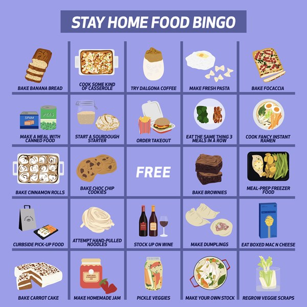

FoodTrip Trends During Quarantine
Do you remember the different food and beverages that trended during Quarantine? Do you remember that it was like every week there's a new food trend. Honestly, Food is one of the few silver-linings we have. It makes the quarantine bearable. Some people become instant cooks and bakers because of the lockdown. Let us give you a rundown of the most notable "Quarantreats".
- Dalgona Coffee
- Sushi Bake
- Ube Cheese Pandesal
- Kori Kohi
- Banana Bread
- Home Samgyupsal
- Manila Bulletin named this as the "Internet Sensation Quarantreats". It's popularity started on Tiktok, with its easy to find ingredients, instant coffee, milk and sugar everyone who loves coffee were able to make it in their own homes. No need for overpriced mainstream coffees.
- This deconstructed version of sushi into a casserole will meet your cravings for maki and sushi. It comes with Nori sheets, that helps people to have a bite size scoops of this treat.
- Pandesal is a staple in a Filipino breakfast. Filipinos found a new way of "spicing things up" with adding ube flavor and cheese. Pandesal + Ube + Cheese, What is there not to love? It's fresh, comforting, soft and delicious.
- Another Coffee drink is Kori Kohi. A Japanese-style almost similar to Dalgona. This one is consist of frozen ice-cubed coffee, warm milk and sugar. The contrast of the frozen coffee and the warm milk creates contrasting temparatures.
- Banana Bread is another easy and healthy pastry that is a staple to every beginner in baking. Although there is nothing new with banana bread, it is still one of the favorite types of bread of everyone. Plus, It is a great alternative for unhealthy desserts or miryendas.
- Samgyupsal is a family and barkada staple even before the lockdown. Mostly Samgyupsal is where friends dine after a long and dreadful week, or for a cause of celebration. With the quarantine still happening less people are able to dine in, so some restaurants made the solution of making a "Home Samgyupsal" delivery for their customers.
Let's See How Many of these Quarantreats you gave in to.
Here are more treats that made its popularity in this pandemic. Have you tried all of it? Try to play this with your friends and family; and who wins will treat the rest with the next Quarantreat that will trend!
